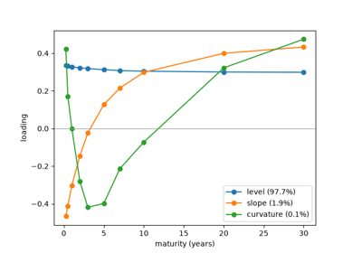
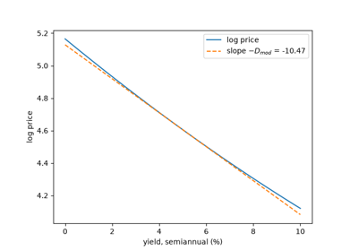

Examples#
This gallery walks through every public feature of financialkit.fixed_income:
bond prices and yields, duration and convexity, yield-curve construction,
immunization and swaps. Each script illustrates one dated breakthrough from
the history page.
Each script in this gallery is self-contained and can be run directly with
python examples/fixed_income/<section>/<script>.py.
Sections#
bonds – yield to maturity, accrued interest, and a coupon bond as a portfolio of STRIPS.
duration – Macaulay, modified and Fisher-Weil duration, convexity, and key rate durations.
curves – forward rates, McCulloch splines, bootstrapping, Nelson-Siegel and Svensson fits, and the principal components of curve moves.
immunization – Redington’s conditions and the Fong-Vasicek \(M^2\) bound.
swaps – the IBM-World Bank currency swap and the plain-vanilla interest-rate swap.
Bonds#
Pricing a bond off a single yield and off a curve of zero-coupon prices.
Yield curves#
Forward rates, bootstrapped, spline and parametric curves, and the factors that move them.

Litterman-Scheinkman: level, slope, curvature
Duration and convexity#
From Macaulay’s average time to payment to Ho’s key rate durations.

Hicks: duration as an elasticity (modified duration)
Immunization#
Protecting a surplus against parallel and non-parallel rate moves.
Swaps#
Swaps valued as the difference between two bonds.